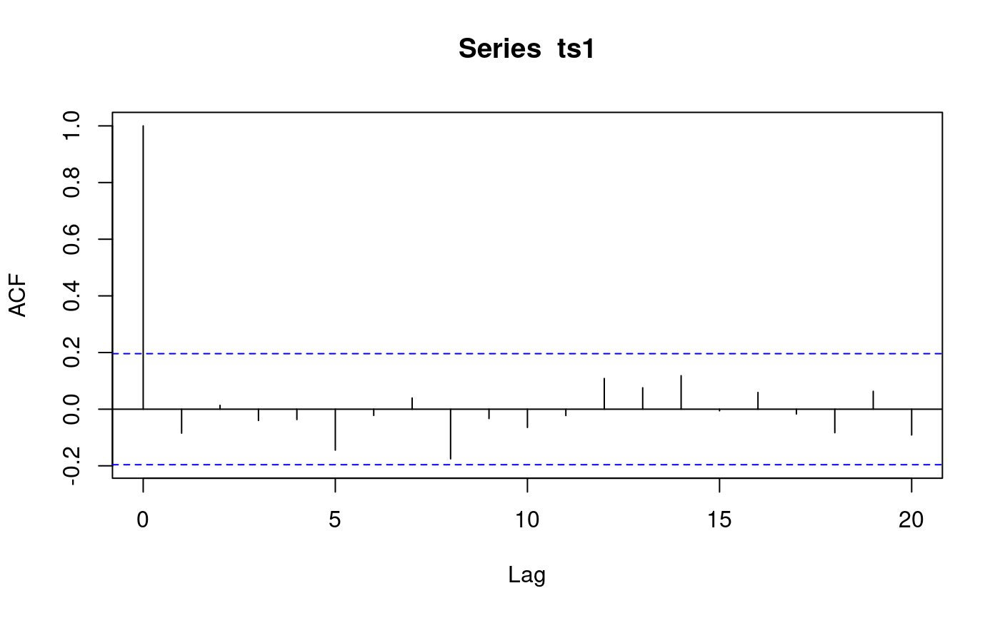
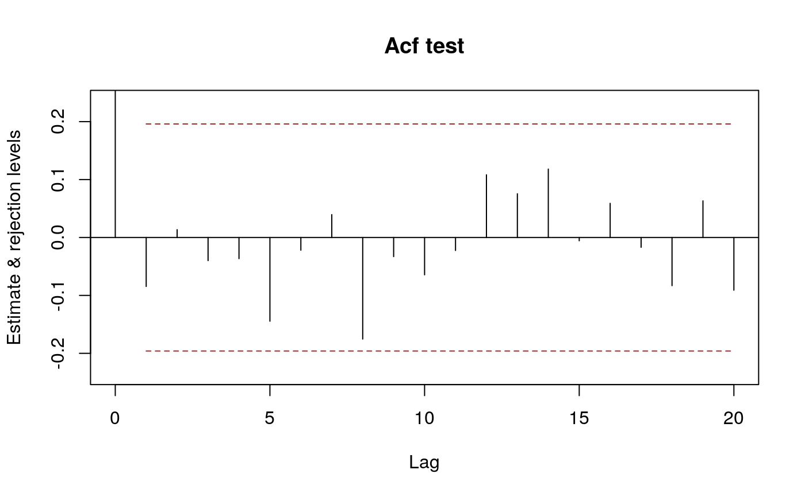

acfIidTest.RdCarry out tests for IID from sample autocorrelations.
acfIidTest(acf, n, npar = 0, nlags = npar + 1, method = c("LiMcLeod", "LjungBox", "BoxPierce"), interval = 0.95, expandCI = TRUE, ...)
| acf | autocorrelations. |
|---|---|
| n | length of the corresponding time series. |
| npar | number of df to subtract. |
| nlags | number of autocorrelations to use for the portmonteau statistic, can be a vector to request several such statistics. |
| method | a character string, one of "LiMcLeod", "LjungBox" or "BoxPierce". |
| interval | a number or NULL. |
| expandCI | logical flag, if |
| ... | additional arguments passed on to methods. In particular, some
methods have argument |
Performs one of several tests for IID based on sample
autocorrelations. A correction of the degrees of freedom
for residuals from fitted models can be specified with argument
npar. nlags specifies the number of autocorrelations to
use in the test, it can be a vector to request several tests.
The results of the test are gathered in a matrix with one row for each
element of nlags. The test statistic is in column "ChiSQ",
degrees of freedom in "DF" and the p-value in "pvalue". The method is
in attribute "method".
If interval is not NULL confidence intervals for the
autocorrelations are computed, under the null hypothesis of
independence. The coverage probability (or probabilities) is
speciified by interval.
If argument expandCI is TRUE, there is one row
for each lag, up to max(nlags). It is best to use this feature
with a single coverage probability.
If expandCI to FALSE the confidence intervals are put in
a matrix with one row for each coverage probability.
a list with components "test" and (if requested) "ci", as described in Details
signature(acf = "ANY")In this method acf contains the autocorrelations.
signature(acf = "missing")The autocorrelations are computed from argument x (the time series).
signature(acf = "SampleAutocorrelations")This is a convenience method in which argument n is taken from
acf and thus does not need to be specified by the user.
Li WK (2004). Diagnostic checks in time series. Chapman & Hall/CRC Press.
#> $test #> ChiSq DF pvalue #> [1,] 101.1762 5 2.986159e-20 #> [2,] 107.0538 10 2.092638e-18 #> [3,] 113.6748 20 4.178416e-15 #> attr(,"method") #> [1] "LiMcLeod" #> #> $ci #> int #> [1,] -0.1959964 0.1959964 #> [2,] -0.1959964 0.1959964 #> [3,] -0.1959964 0.1959964 #> [4,] -0.1959964 0.1959964 #> [5,] -0.1959964 0.1959964 #> [6,] -0.1959964 0.1959964 #> [7,] -0.1959964 0.1959964 #> [8,] -0.1959964 0.1959964 #> [9,] -0.1959964 0.1959964 #> [10,] -0.1959964 0.1959964 #> [11,] -0.1959964 0.1959964 #> [12,] -0.1959964 0.1959964 #> [13,] -0.1959964 0.1959964 #> [14,] -0.1959964 0.1959964 #> [15,] -0.1959964 0.1959964 #> [16,] -0.1959964 0.1959964 #> [17,] -0.1959964 0.1959964 #> [18,] -0.1959964 0.1959964 #> [19,] -0.1959964 0.1959964 #> [20,] -0.1959964 0.1959964 #> attr(,"level") #> [1] 0.95 #>#> $test #> ChiSq DF pvalue #> [1,] 104.1064 5 7.195511e-21 #> [2,] 110.1697 10 4.931409e-19 #> [3,] 116.2725 20 1.391563e-15 #> attr(,"method") #> [1] "LjungBox" #> #> $ci #> int #> [1,] -0.1959964 0.1959964 #> [2,] -0.1959964 0.1959964 #> [3,] -0.1959964 0.1959964 #> [4,] -0.1959964 0.1959964 #> [5,] -0.1959964 0.1959964 #> [6,] -0.1959964 0.1959964 #> [7,] -0.1959964 0.1959964 #> [8,] -0.1959964 0.1959964 #> [9,] -0.1959964 0.1959964 #> [10,] -0.1959964 0.1959964 #> [11,] -0.1959964 0.1959964 #> [12,] -0.1959964 0.1959964 #> [13,] -0.1959964 0.1959964 #> [14,] -0.1959964 0.1959964 #> [15,] -0.1959964 0.1959964 #> [16,] -0.1959964 0.1959964 #> [17,] -0.1959964 0.1959964 #> [18,] -0.1959964 0.1959964 #> [19,] -0.1959964 0.1959964 #> [20,] -0.1959964 0.1959964 #> attr(,"level") #> [1] 0.95 #>#> $test #> ChiSq DF pvalue #> [1,] 101.1762 5 2.986159e-20 #> [2,] 107.0538 10 2.092638e-18 #> [3,] 113.6748 20 4.178416e-15 #> attr(,"method") #> [1] "LiMcLeod" #>#> $test #> ChiSq DF pvalue #> [1,] 103.0303 1 3.300609e-24 #> attr(,"method") #> [1] "LjungBox" #> #> $ci #> int #> [1,] -0.1959964 0.1959964 #> [2,] -0.1644854 0.1644854 #> attr(,"level") #> [1] 0.95 0.90 #>## acfIidTest() is called behind the scenes by methods for autocorrelation objects ts1_acrf <- autocorrelations(ts1) class(ts1_acrf) # "SampleAutocorrelations"#> [1] "SampleAutocorrelations" #> attr(,"package") #> [1] "sarima"#> $test #> ChiSq DF pvalue #> [1,] 3.265487 5 0.6591297 #> [2,] 7.469225 10 0.6805278 #> [3,] 14.503102 20 0.8040996 #> attr(,"method") #> [1] "LiMcLeod" #> #> $ci #> int #> [1,] -0.1959964 0.1959964 #> [2,] -0.1959964 0.1959964 #> [3,] -0.1959964 0.1959964 #> [4,] -0.1959964 0.1959964 #> [5,] -0.1959964 0.1959964 #> [6,] -0.1959964 0.1959964 #> [7,] -0.1959964 0.1959964 #> [8,] -0.1959964 0.1959964 #> [9,] -0.1959964 0.1959964 #> [10,] -0.1959964 0.1959964 #> [11,] -0.1959964 0.1959964 #> [12,] -0.1959964 0.1959964 #> [13,] -0.1959964 0.1959964 #> [14,] -0.1959964 0.1959964 #> [15,] -0.1959964 0.1959964 #> [16,] -0.1959964 0.1959964 #> [17,] -0.1959964 0.1959964 #> [18,] -0.1959964 0.1959964 #> [19,] -0.1959964 0.1959964 #> [20,] -0.1959964 0.1959964 #> attr(,"level") #> [1] 0.95 #>plot(ts1_acrf)